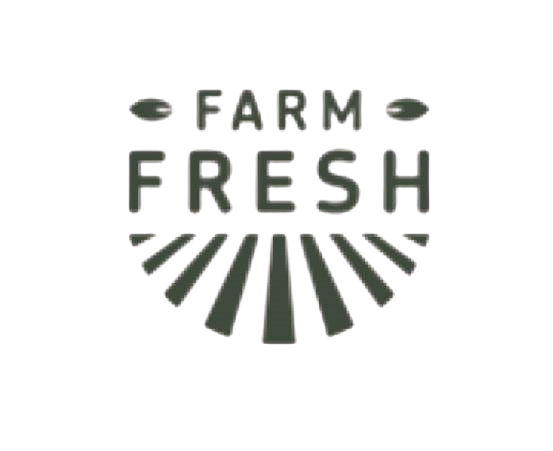
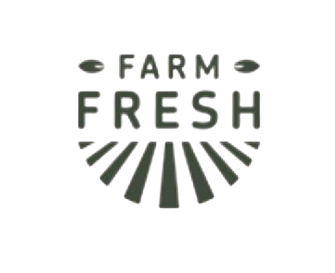

Professional Farmers
Nullam porta enim vel tellus commodo, eget laoreet odio ultricies.
Fresh Milk
Nullam porta enim vel tellus commodo, eget laoreet odio ultricies.
Nutrition Products
Nullam porta enim vel tellus commodo, eget laoreet odio ultricies.
100% Guaranteed
Nullam porta enim vel tellus commodo, eget laoreet odio ultricies.

435+
Nutrition Products We Sell
Who We Are
Currently we are growing and selling Nutrition Products
Tested daily for antibiotics, hormones, and additives – it takes more tests than any college kid! Only milk that aces every test is delivered to your doorstep.
We don’t just say it, We prove it.
Every batch tested. Every packet pure. Check your daily milk report.
Come Over And See How We Do It.
It’s Fun, Learning and Memories. Packed into a day.
Our Products

Milk
Dairy Buffalo Milk
Milk is a very important part of our diet as it is extremely nutritious. It is a great source of calcium, vitamins and minerals.

Products
Nutrition Products
Cow’s milk is processed into a wide array of nutritious products, including milk itself as well as cultured products like yogurt and cheese, and dairy fats like butter and cream.
Milk Products
Fresh Buffalo Ghee
Cow ghee can be beneficial for health when consumed in moderation. It’s a source of healthy fats, vitamins, and other nutrients that can support various bodily functions.
Choose What’s Perfect
For Your Field
Dairy Products
Nullam porta enim vel tellus commodo, eget laoreet odio ultricies.
Quality Products
Nullam porta enim vel tellus commodo, eget laoreet odio ultricies.
.jpg)
Fresh Buffalo Milk
Nullam porta enim vel tellus commodo, eget laoreet odio ultricies.
Pure & Organic Products
Nullam porta enim vel tellus commodo, eget laoreet odio ultricies.


🛈 Testimonial
What our customers say
★★★★★
Nuziveedu Dairy Farm consistently delivers premium-quality dairy products that stand out for their freshness and purity. Their milk, butter, and other offerings...
Sameer
Supervisor
★★★★★
Milk, Marriage & Middle-Class Morals 🥛 In our house, milk isn’t just nutrition— it’s tradition. For over 3 years now, my wife has been a die-hard fan of Nuziveedu Farm milk...

Reena Basu
Customer
★★★★★
A Delightful and Educational Visit to Sid’s Farm. Our recent trip to Nuziveedu Dairy Farm was an enlightening experience that offered a deep dive into the world of...
Musthafa
Co Founder

 
